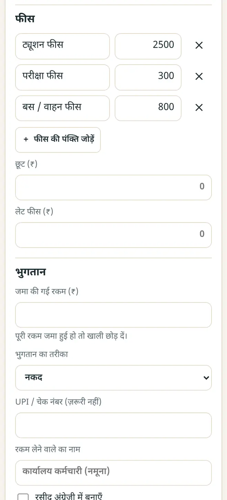
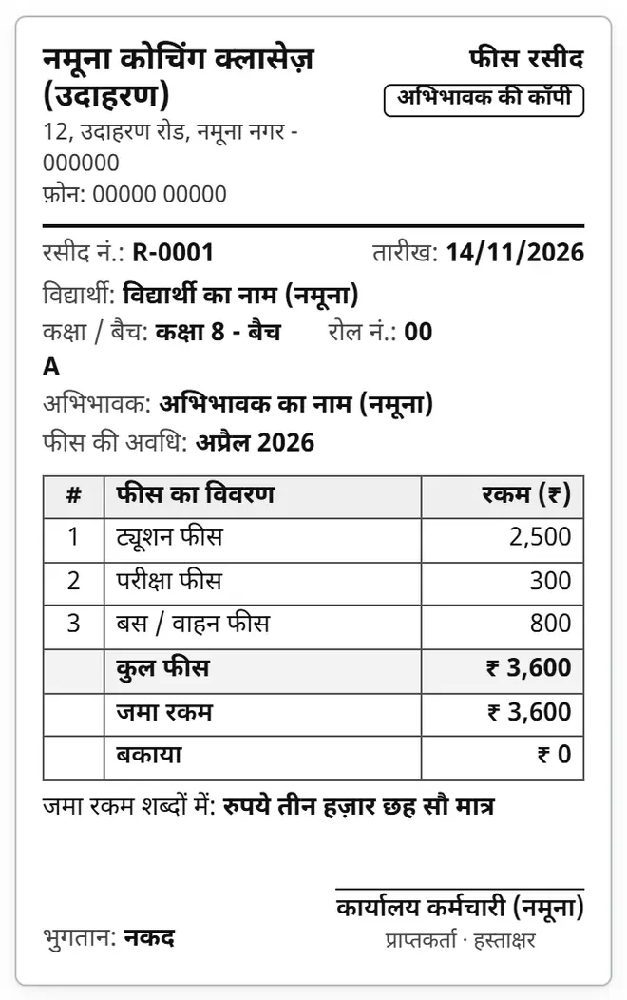

स्कूल, कोचिंग और ट्यूशन के लिए फ़ीस रसीद का फ़ॉर्मेट: मुफ़्त में बनाएँ
अभिभावक रसीद माँगते हैं, और ट्यूटर या छोटे स्कूल को हर भुगतान का हिसाब रखना होता है। इसके लिए छपी हुई रसीद बुक ज़रूरी नहीं है। एक छोटा फ़ॉर्म भरें: ऐप फ़ीस जोड़ता है, रक़म शब्दों में लिखता है और एक A4 पेज पर कार्यालय की कॉपी और अभिभावक की कॉपी छाप देता है।
छोटा जवाब
फीस रसीद मेकर खोलें और अपने स्कूल या क्लास का नाम, विद्यार्थी का नाम और फ़ीस लिखें। ज़रूरत हो तो “छूट (₹)” या “लेट फीस (₹)” भरें और “भुगतान का तरीका” चुनें। “प्रिंट / PDF सेव करें” दबाएँ: A4 पेज पर दो कॉपी आती हैं, बीच में काटने की लाइन के साथ।
5 स्टेप में फ़ीस रसीद
-
अपने स्कूल या क्लास की जानकारी भरें
फीस रसीद मेकर खोलें। यह नमूना जानकारी के साथ खुलता है। स्कूल, कोचिंग या ट्यूटर का नाम, पता और फ़ोन नंबर लिखें, और लोगो हो तो जोड़ें। यह जानकारी अगली रसीद के लिए इसी डिवाइस पर याद रहती है।
-
रसीद और विद्यार्थी की जानकारी भरें
रसीद नंबर और तारीख़ देख लें, और लिखें कि फ़ीस किस महीने या टर्म की है। विद्यार्थी का नाम, कक्षा या बैच, रोल नंबर और अभिभावक का नाम लिखें।
-
फ़ीस जोड़ें
हर फ़ीस की रक़म लिखें, जैसे ट्यूशन फ़ीस, परीक्षा फ़ीस या वाहन फ़ीस। पंक्ति का नाम बदल सकते हैं, और “फीस की पंक्ति जोड़ें” से एक और पंक्ति मिलती है। “छूट (₹)” या “लेट फीस (₹)” हो तो भरें। कुल रक़म अपने-आप निकल आती है।

फ़ीस की पंक्तियाँ, छूट, लेट फ़ीस और भुगतान। -
भुगतान दर्ज करें
अगर फ़ीस का सिर्फ़ एक हिस्सा जमा हुआ है, तो उसे “जमा की गई रकम (₹)” में लिखें; रसीद बकाया दिखा देगी। पूरी रक़म जमा हुई हो तो इसे ख़ाली छोड़ दें। “भुगतान का तरीका” में नक़द, UPI, बैंक ट्रांसफ़र, चेक या कार्ड चुनें, और UPI या चेक नंबर व रक़म लेने वाले का नाम लिखें।
-
प्रिंट करें, सेव करें और अगली रसीद बनाएँ
“प्रिंट / PDF सेव करें” दबाएँ और A4 काग़ज़ चुनें, या WhatsApp पर भेजने के लिए Save as PDF। पेज को बिंदीदार लाइन पर काटें, दोनों कॉपी पर हस्ताक्षर करें, कार्यालय की कॉपी रखें और दूसरी अभिभावक को दें। “नई रसीद” से अगले नंबर की नई रसीद शुरू होती है।

फ़ीस रसीद, प्रिंट के लिए तैयार।
फ़ीस रसीद में क्या-क्या होना चाहिए
- स्कूल या क्लास का नाम और पता, रसीद नंबर और तारीख़।
- विद्यार्थी का नाम और कक्षा, और फ़ीस किस महीने या टर्म की है।
- हर फ़ीस और उसकी रक़म, छूट या लेट फ़ीस, जमा रक़म अंकों और शब्दों में, और बकाया हो तो वह भी।
- फ़ीस कैसे दी गई, किसने ली, और हस्ताक्षर। ऐप रसीद पर हस्ताक्षर या मुहर नहीं लगाता: छपी कॉपी पर हस्ताक्षर करें, और मुहर इस्तेमाल करते हों तो लगाएँ।
नए मुफ़्त टूल और हिंदी में AI के पाठ पाएँ
हमारी ईमेल लिस्ट से जुड़ें: नए मुफ़्त ऐप, नई गाइड और AI पर हिंदी वीडियो पाठ की जानकारी आपको मिलती रहेगी। कोई स्पैम नहीं।
सिर्फ़ वयस्कों (18+) के लिए। आप कभी भी नाम हटवा सकते हैं।
हम ये टूल क्यों सुझाते हैं
- सबके लिए मुफ़्त: न विज्ञापन, न साइन-अप, न कोई पेड प्लान।
- प्राइवेट: आपकी फ़ाइलें और जानकारी आपके अपने डिवाइस पर ही रहती हैं।
- फ़ोन, लैपटॉप या स्मार्टबोर्ड पर चलते हैं, और एक बार खुलने के बाद बिना इंटरनेट भी।
- हिंदी समेत 12 भाषाओं में।
वीडियो से सीखना पसंद है? हमारे YouTube चैनल पर AI और मुफ़्त टूल्स के हिंदी पाठ देखें।
अक्सर पूछे जाने वाले सवाल
फ़ीस रसीद का फ़ॉर्मेट क्या होता है?
सबसे ऊपर स्कूल या क्लास का नाम, रसीद नंबर और तारीख़, विद्यार्थी की जानकारी, फ़ीस और रक़म की तालिका, कुल रक़म, जमा रक़म शब्दों में, भुगतान का तरीक़ा, और रक़म लेने वाले के हस्ताक्षर।
क्या होम ट्यूटर या कोचिंग क्लास इसे इस्तेमाल कर सकते हैं?
हाँ। स्कूल के नाम की जगह अपना नाम या अपनी क्लास का नाम लिखें। यह स्कूल, कोचिंग क्लास, होम ट्यूशन और संगीत या हॉबी क्लास, सबके काम आता है।
क्या यह रसीदों का रिकॉर्ड रखता है?
हाँ। जब आप “रसीद सेव करें” दबाते हैं या प्रिंट करते हैं, तो रसीद इसी ब्राउज़र में, आपके डिवाइस पर रख ली जाती है। “CSV डाउनलोड करें” से Excel या Google Sheets के लिए एक फ़ाइल मिलती है, जिसमें जमा हुई सारी फ़ीस होती है। उस फ़ाइल को बैकअप के रूप में रखें, क्योंकि ब्राउज़र का डेटा मिटाने पर सेव रसीदें हट जाती हैं।
क्या यहाँ बनी रसीद मान्य है?
रसीद आपका अपना रिकॉर्ड है कि आपको रक़म मिली। जानकारी सही होनी चाहिए, और उस पर आपके हस्ताक्षर ज़रूरी हैं। अगर अभिभावक को रसीद टैक्स की छूट या ऑफ़िस में देने के लिए चाहिए, तो वे वहीं पूछ लें कि क्या ज़रूरी है। यह गाइड टैक्स की सलाह नहीं है।
क्या रसीद हिंदी या अंग्रेज़ी में बना सकते हैं?
रसीद ऐप की भाषा में बनती है, और रक़म शब्दों में भी उसी भाषा में आती है। अगर आप ऐप किसी और भाषा में चला रहे हैं और रसीद अंग्रेज़ी में चाहिए, तो “रसीद अंग्रेज़ी में बनाएँ” पर निशान लगाएँ।
काम की लगी?
इसे किसी दोस्त, साथियों या अपने स्कूल के WhatsApp ग्रुप में भेजें।